Basics Buffet
Hello, World!
Python encourages programmers to program without boilerplate (prepared) code.
- The simplest directive in Python is the "print" directive - it simply prints out a line and also includes a new line, unlike C.
- There are two major Python versions, Python 2 and 3, which are quite different
- v3 is more semantically correct and supports newer features ie, v3 the print statement is a function so must include parantheses whereas v2 it's invoked without them.
- It operates a lot like the console.log() in JavaScript
- Comments in your code are used with the # symbol
Python uses indentation for blocks, rather than curly braces.
- Both tabs and spaces are supported, but the standard indentation requires standard py code to use four spaces.
Variables and Types
Python is completely object oriented, not "statically typed".
- You do not need to declare variables before using them, or declare their type
- Every variable in py is an object
- Numbers
- Python supports two types numbers; integers and floating point numbers (also complex numbers)
- The floating point number represents the float type object.
- Float is used to represent real numbers and is written with a decimal point dividing the integer and fractional parts
- Example: 97.98, 32.3+e18, -32.54e100 all are floating point numbers
- Strings
- Strings are defined either with single or double quotes
- The difference is that using double quotes makes it easy to include apostrophes whereas these would terminate the string using single quotes.
- 'That\'s nice!' <- Cause JavaScript
- There are additional variations defining strings that make it easier to include things such as carriage returns, backslashes, and Unicode characters that are explained here
Lists
Lists are very similar to arrays. They can contain any type of variable, and they can contain as many variables as you wish.
- Lists can also be iterated over in a very simple manner, like so: 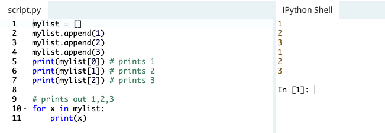
Basic Operators
Arithmetic Operators
- Just as any programming language, addition +, subraction -, multiplication *, and division / operators can be used with numbers.
- Modulo (%) is also available, which returns the integer remainder of the division. Not to be confused with the division operator (/).
- / divides, % returns remainder
- Two multiplication symbols
(**)makes a power relationship 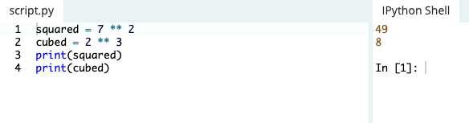 - Python supports concatenating strings using the addition (+) operator 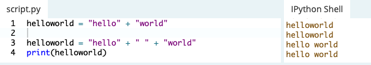
- Notice in the image above how I needed to give additional quotes with a space in the middle to account for that space printing. Running that concatenation like JavaScript eliminates the space.
- You can also multiply strings 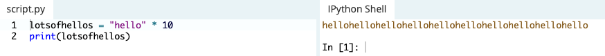
- Lists can be joined with addition operators: 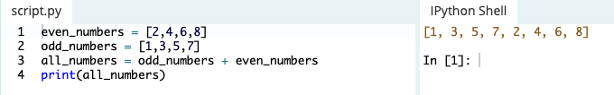
- Python supports forming new lists with a repeating sequence like strings above: 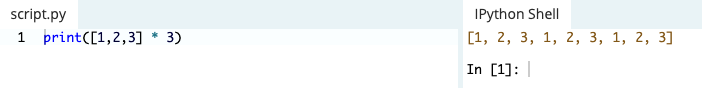
String Formatting
Python uses C-style string formatting to create new, formatted strings.
- The "%" operator is used to format a set of variables enclosed in a tuple (a fixed size list), together with a format string, which contains normal text together with argument specifiers, special symbols like %s and %d. 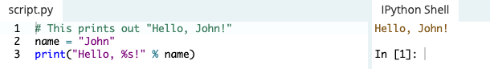
- To use two or more argument specifiers, use a tuple(parantheses) 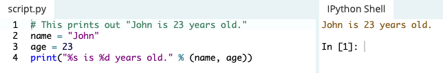
Basic Argument Specifiers
%s- String (or any object with a string representation, like numbers)%d- Integers%f- Floating point numbers%.<number of digits>f- Floating point numbers with a fixed amount of digits to the right of the dot.%x/%X- Integers in hex representation (lowercase/uppercase)
Basic String Operations
You can print out the length of a strength using the len object like print(len(astring)). If I assign the value of a sentence the len object would give me the amount of characters in that sentence 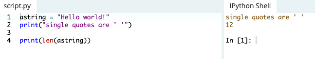
- You can also find where an index is: 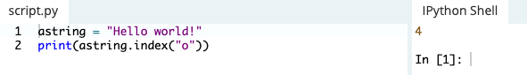 it prints 4 because the location of the first occurence of "o" is 4 characters away from the first character.
- This example only recognizes the first occurrence
- The .count method counts however many of the character you give it in the string: 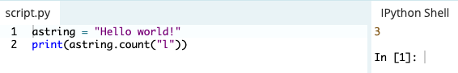
- You can reverse a string like this: 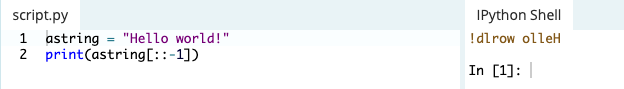
- toUpperCase and toLowerCase 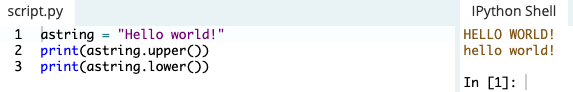
Conditions
Python uses boolean variables to evaluate conditions. True and False are returned when an expression is compared or evaluated.
- Variable assignment is done using a single equals operator = whereas comparison between two variables is done using the double equals operator ==
- Not equals operator is marked with !=
- The and/or boolean operators allow building complex boolean expressions 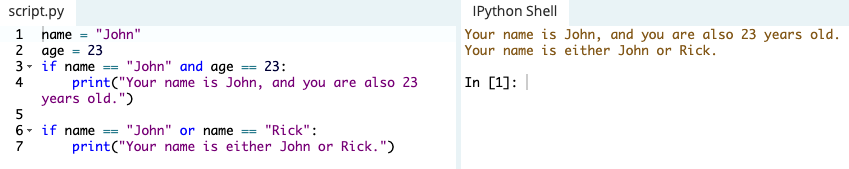
- Python if statement using code blocks. This doesn't work without indentation: 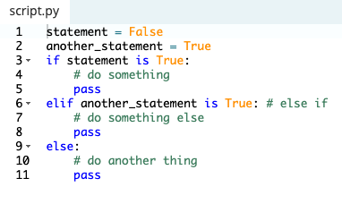
- A statement evaluates to true if onen of the following is correct:
- The "True" boolean variable is given, or calculated using an expression, such as arithmetic comparison
- An object which is not considered "empty" is passed
- Unlike the == operator, the is operator does not match the values of the variables, but the instances themselves. 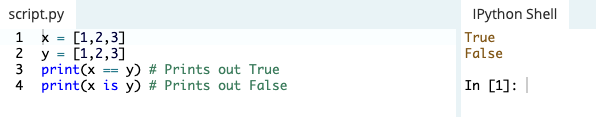
- Using not before a boolean expression inverts it 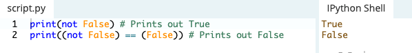
Loops
There are two types of loops in Python, for and while.
for loops
For loops can iterate over a sequence of numbers using the range and Xrange functions.
- Range returns a new list with numbers of that specified range, whereas
- Xrange returns an iterator, which is more efficient
while loops
- repeat as long as a certain boolean condition is met.
- break is used to exit a for loop or a while loop, whereas continue is used to skip the current block, and return to the for or while statement 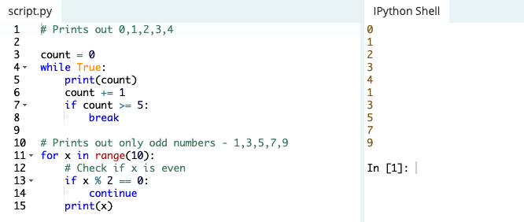
- Python uses else clauses for loops. When the loop condition of for or while statement fails then code part in else is executed.
- If break statement is executed inside for loop then the else part is skipped. Note that else part is executed even if there is a continue statement
Functions
Functions are a convenient way to divide your code into useful blocks, allowing us to order our code, make it more readable,reuse it and save some time.
- Functions are a key way to define interfaces so programmers can share their code
- Functions in python are defined using the block keyword def, followed with the function's name as the block's name.
- Invoking a function:
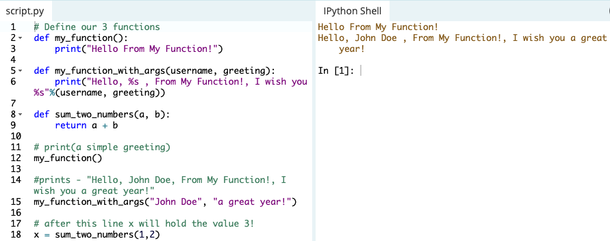
Classes and Objects
Objects are an encapsulation of variables and functions into a single entity.
- Objects get their variables and functions from classes.
- Classes are essentially a template to create your objects.
Dictionaries
A dictionary is a data type similar to arrays, but works with keys and values instead of indexes.
- Each value stored in a dictionary can be accessed using a key, which is any type of object(string, num, list, etc) instead of using its index to address it. 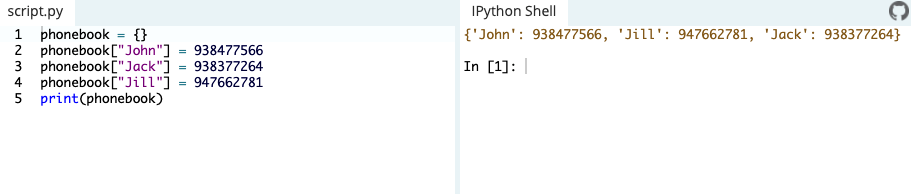 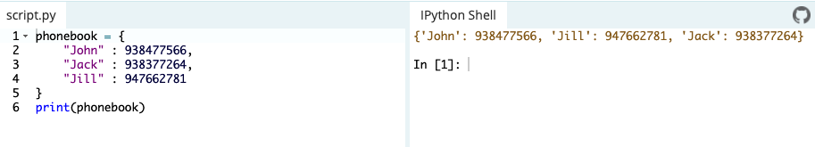
- Dictionaries can be iterated over, just like a list. However, a dictionary doesn't keep the order of the values stored in it.
- To iterate over key value pairs, use this syntax: 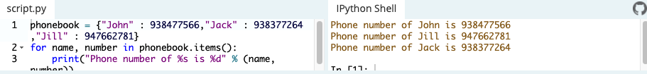
- To remove an index: 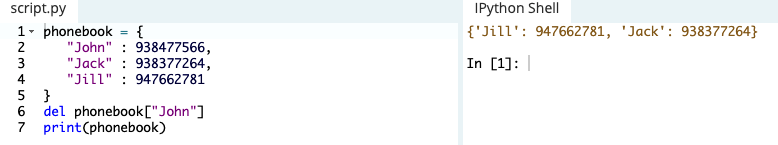 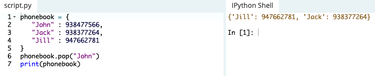
Modules and Packages
A module is a piece of software that has specific functionality like building a ping pong game, one module would be responsible for the game logic, and another module would be responsible for drawing the game on the screen.
- each module is a different file, which can be edited separately.
- modules in python are files with a .py extension (module_name.py)
- modules are imported using the import command
- if a .pyc file exists, it gets loaded instead of the .py file
- you can import specific functions from a file using the from command (from module_name import this_function)
- the first time a module is loaded into a py script, it is initialized by executing the code in the module once
- if another module in your code imports the same module again, it will not be loaded twice but once only so local variables inside the module act as a singleton
- Check out Python Standard Library for a list of built in modules
- 2 very important functions come in handy when exploring modules in Python: dir and help functions
- dir looks for which functions are implemented in each module (import urllib >>> dir(urllib))
- help is used after we've found a directory that we want to read (help(urllib.urlopen))
- Packages are namespaces which contain multiple packages and modules themselves.
- Each package in python is a directory which must a special file called
__init__.py - the init file can also decide which modules the package exports as the API, while keeping other modules internal, by overriding the
__all__variable